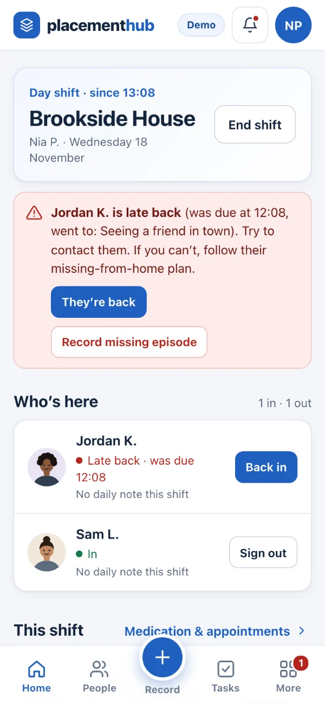
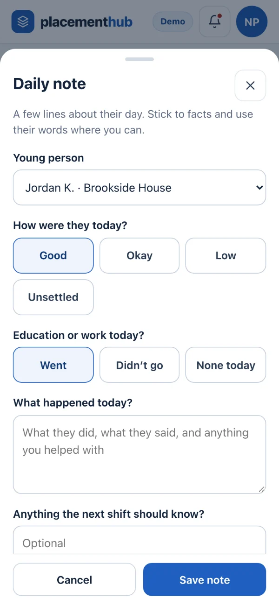
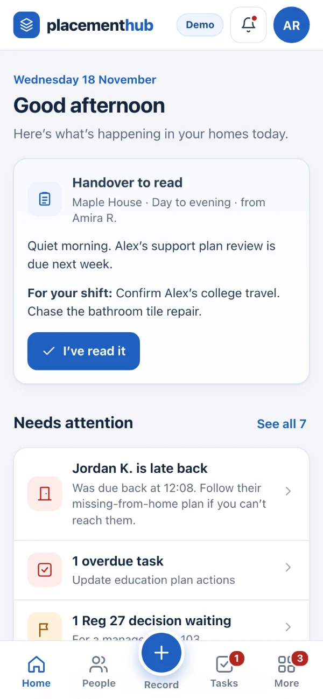
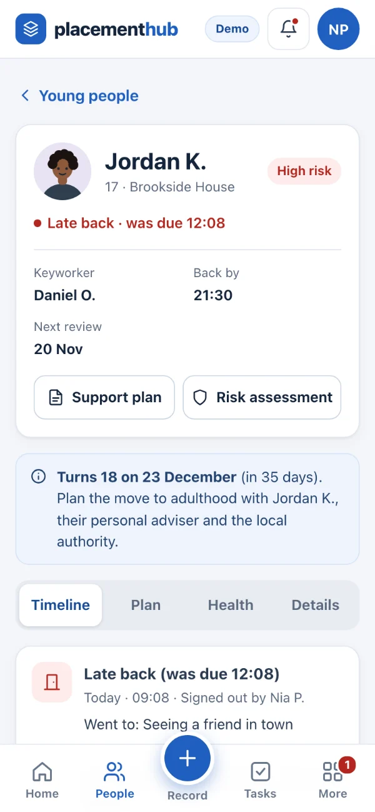

Nia starts her shift and reads the night handover.
Handover read
Record the shift as it happens.
Placement Hub is a phone app for staff in Ofsted-registered supported accommodation for 16 and 17 year olds. Daily notes, signing in and out, medication and handovers each take a few taps. Managers see what needs attention, and the evidence Ofsted will ask for.
No sign-up needed: pick a demo account and look around.Create a free account with your email to try it. The demo uses made-up young people and staff.
Time
Brookside House
Day shift, Nia P.
- Medication: Jordan takes their morning antibiotic, and Nia records it.
Taken - Jordan signs out to see a friend in town, back by 11:00.
Signed out - Jordan was due back. The app raises a late-back alert with the missing-from-home steps.
Late back - Jordan is home. Nia signs them back in and notes their conversation.
Back in - Daily note for Sam: a good day at college, then cooked dinner with support.
Good day - The handover is drafted from the day’s records. Nia checks it and finishes.
Handed over


Made for the people on shift
Support workers record as they go, on the phone in their pocket. Plain words and big buttons mean there’s no manual to learn.
Start of shift
Pick your house and shift, read the handover and tap “I’ve read it”.
Who’s in, who’s out
See where everyone is and when they agreed to be back. Sign people out and back in with one tap.
Late-back alerts
If someone isn’t back on time, the app says so and opens the missing-from-home steps, already filled in.
Daily notes
How their day went in a few lines: mood, education, what happened, and anything for the next shift.
Concerns
Log a concern in seconds. If someone is late back, the missing-episode record is filled in for you, so nothing is typed twice.
Handover, drafted for you
When you finish, the handover is written from the day’s records. Check it, add anything else, and save.

A clear view for managers
Managers use the same simple app, with the extra tools they need to run the service and show how it’s going.
Needs attention
One list of what needs following up today, across every house.
Regulation 27 decisions
Record whether a serious event needs reporting to Ofsted. The app never decides for you and never sends anything.
Ofsted evidence
Tick off evidence against the four quality standards and export it when you need it.
Rota, leave and documents
Plan shifts, approve leave, and see which version of each plan is current and when it’s due for review.
The right view for each person
Support workers see the shift pages. Only managers can change the rota or make decisions. Every record carries the name of whoever wrote it.

Each young person, in one place
Open a young person to see one timeline of their daily notes, medication, keywork, concerns and time out of the house, newest first.
When someone is within four months of turning 18, the app says so, so planning for the move to adulthood starts in time.
Organised around the quality standards
The Supported Accommodation (England) Regulations 2023 set four quality standards. Placement Hub keeps the everyday evidence for each one together.
| Quality standard | Regulation | Where it shows up in Placement Hub |
|---|---|---|
| Leadership and management | Regulation 4 | Training and supervision records, tasks with named owners, documents with review dates |
| Protection | Regulation 5 | Concerns, missing episodes, late-back alerts, and follow-up after each incident |
| Accommodation | Regulation 6 | Repairs tracked until they’re fixed, plus house safety checks and documents |
| Support | Regulation 7 | Daily notes, keywork, goals, and preparing for 18 |
It also helps with two other duties: deciding whether a serious event needs a Regulation 27 notification, and gathering material for the six-monthly quality of support review under Regulation 32. Placement Hub helps you organise evidence. It doesn’t replace professional judgement or tell you whether you’re compliant.
Works on the phones staff already have
It runs in the web browser. Add it to the home screen and it opens like any other app.
Keeps going when the signal drops
Once added from its website, it still opens without a connection.
Easy to read on a busy shift
Large text, big buttons and plain English, set in a typeface designed for legibility.
Where Placement Hub is now
Placement Hub is a working prototype. Everything in the demo is made up, and changes are saved only on the device you’re using.
Coming next
- Appointments and medication support
- Life skills and money: allowances, savings and independence goals
- Automatic sign-out on shared phones
Needed before real use
- A secure database, so records are shared safely between staff
- A full record of who changed what, and when
- A data protection review
- Backups, and access that managers control
Questions
How do I try it?
Tap “Try the demo” and choose a demo account, such as Nia, a support worker, or Amira, a deputy manager. You don’t need to create an account. Start a shift at Brookside House to see what happens when Jordan is late back.
Tap “Try the demo” and create an account with your email address. We’ll email you a link to confirm it’s yours, then you can sign in. Start a shift at Brookside House to see what happens when Jordan is late back.
Can we use it with real young people’s information?
Not yet. The demo sign-in only shows how signing in would work, and the records are made-up and stay on the device you’re using. The list under “Needed before real use” has to be done first.
Not yet. Accounts are real and need a confirmed email, but the records are made-up and stay on the device you’re using. The list under “Needed before real use” has to be done first.
Does it send anything to Ofsted?
No. It helps a manager record their decision about a Regulation 27 notification. Notifications are made through Ofsted’s own reporting service.
Does it work on any phone?
Yes. It works in the browser on iPhone and Android, and on computers. Staff can add it to their home screen.
Who is it for?
Providers of supported accommodation for 16 and 17 year olds in England: support workers, senior staff and managers.
See a shift for yourself
It takes about two minutes. Pick a demo accountCreate an account, start a shift at Brookside House, and follow the day from the handover to the next one.